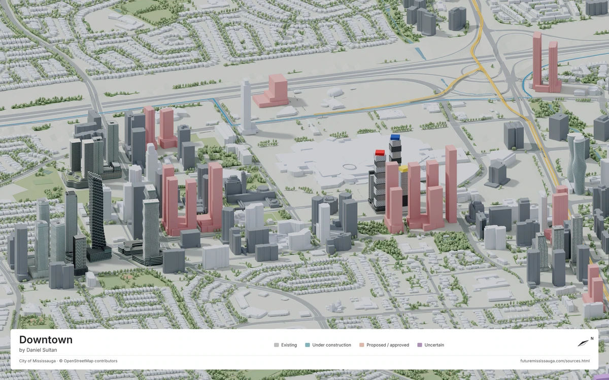

What’s being built in Mississauga?
Explore the buildings, neighbourhoods and transit lines changing the city.

Neighbourhoods
View all 20Building studies
All buildings M City M1 and M2
M City M1 and M2 Artform
Artform
Views of the city
Image gallery

Explore the buildings, neighbourhoods and transit lines changing the city.
